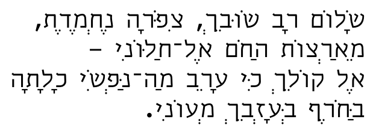
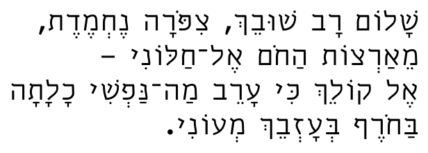

Typography, Type Design & Fonts
Table of Contents
1 Typography
2 TeX, LaTeX & Friends
2.1 Advocacy
2.2 XeLaTeX
2.2.1 XeLaTeX tips & tricks
- Selecting a specific glyph from a font
Once you start using various fonts, you will want to have access to glyphs that are not part of the normal unicode character set (for example, various ligatures, or special symbols). The easy way to do this in XeLaTeX, is through the use of the
\XeTeXglyphmacro. It takes a number n, and returns the n-th glyph in the current font. Please keep in mind that this is not the Unicode value of the character, but the index of the glyph. Of course, it goes without saying that you should use\XeTeXglyphwithin a macro, and use the name of the macro to refer to the glyph, rather than the index.
- Hebrew & Nikud (ניקוד)
Nikud is the placement of vowels above and below the Hebrew letters. If you want to typeset Hebrew text with vowels, you should be aware of two issues: the font, and the font specification.
Most Israeli fonts that are prepared for everyday professional and commercial use, either do not support the placement of vowels, or do so poorly. Modern Hebrew is generally not typeset with vowels, so most fonts do not support them. Fonts that provide high-quality support for vowels cost more. You can often purchase the same typeface with or without special support for vowels, at a considerable price difference.
What is involved in high-quality support for vowels: A lot of kerning information, and some ligatures, or character combinations. Rudimentary support for vowels is simple: Most Hebrew fonts contain glyphs for the vowels, and word processors know how to combine these with the characters that precede them. The problem is that some characters are shaped in such a way that the vowel glyps are either overwritten or otherwise ill-placed relative to the character they are supposed to modify. When you buy fonts with special support for nikud, you get fonts for which special kerning tables have been created, for describing how best to place each vowel on each and every character. Some combinations of characters and vowels require a special glyph to make sure that the combination looks well. Such fonts are more expensive because they require more glyphs and much larger kerning tables.
Once you have OTF fonts that provide high-quality support for nikud, you can go ahead and use them with XeLaTeX.
The second issue has to do with how to specify a Hebrew font. Unless you specify, either in the fontspec or mainfont declarations that the script is Hebrew, XeLaTeX will not place the vowels properly. Here is what happens if you omit the
Scriptproperty:
Nikud handled improperly
This is not a problem with the font, or a problem in XeLaTeX, but rather a problem in how you specified the font. If you add the
Script={Hebrew}property, the vowels shall be placed correctly, as per the quality of the font and font designer:
Nikud handled properly
The only difference between these two examples is the proerty
Script={Hebrew}in the font specification.If you specified the
Scriptproperty and the vowels are nevertheless placed poorly, then you probably are not using an OTF font with high-quality support for nikud. As I mentioned earlier, these fonts go by the same name as the ones that do not support nikud, but they cost more.There are free fonts that do a fair job supporting nikud, but frankly, they're just plain ugly. The Hebrew-speaking world is a small marketplace, and there aren't many freebies available. There are various open source projects for creating Hebrew fonts, but high-quality fonts are works of art: they require a lot of knowledge, artistic abilities, aesthetics, and a lot of hard work. With fonts, you definitely get what you pay for!
You do not want to use commercial Hebrew fonts that you do not own! Let me be very clear and very explicit on this point: It is possible to find Hebrew fonts, with or without nikud, on the internet, the same way software, music, movies, and books are found. You do not want to use these fonts in any work you produce, whether printed or on the web. Consider these fonts cursed, and stay away from them! The reason is simple: The Hebrew font market is tiny. Everyone knows everyone else, everyone guards their creations jealously, and some font foundries are notorious for having a very aggressive legal department. If you use commercial fonts for which you do not own a license, you can expect a rather nasty phone call demanding that you buy the fonts you used. You will most likely not be given the option of avoiding the lawsuit by removing the offending material. Rather, you will be forced, under threat of legal action, to buy these fonts at exorbitant prices. Before you even think of downloading and using these fonts, please Google the internet and read stories of Israeli students of grahpic design & typography who were forced to come up with tens of thousands of shekels in a matter of days in order to avoid lawsuits. Be wise, and stay away from commercial Hebrew fonts unless you own the license!
3 Fonts
3.1 Hebrew typography
3.2 Where to get fonts
3.2.1 Hebrew fonts
- My top choice is Ha'Gildah (הגילדה, "the guild"). The "guild" is a cooperative of independent font makers
3.3 Interesting fonts
3.4 Font Creation Software
3.4.1 Fontlab
- Fontlab Tutorials
- JoKKeSvin's Introduction to Fontlab (YouTube)
- JoKKeSvin's Introduction to kerning classes (part I, YouTube)
- JoKKeSvin's Introduction to kerning classes (part II, YouTube)
- JoKKeSvin's Introduction to Ligatures (YouTube)
- Adam Twardoch's overview of Fontlab 5
- Fontlab tutorials on the Haiku Monkey
- Jay Hilgert's Fontlab Studio Tutorial (part 1)
- Jay Hilgert's Fontlab Studio Tutorial (part 2)
- Jay Hilgert's Fontlab Studio Tutorial (part 3)
3.4.2 Fontographer
3.4.3 FontForge
Date: 2011-09-18 13:58:50 IDT